SENTINEL
Aam istemaal karne wale ke liye qadam ba qadam: install, roz chalana, login, dashboard ka har hissa, aur har feature ka test, ke screen par kya dikhna chahiye. Test ki boxes yahin tick karein: tick is browser mein yaad rehti hai.
A · Shuru karne se pehle
1. Ye Guide Kis Ke Liye Hai?
Ye guide aam istemaal karne wale ke liye hai, programmer hona zaroori nahi. Is mein qadam ba qadam likha hai:
- Sentinel ko pehli dafa computer par kaise install karein.
- Roz kaise chalayein (start) aur band karein.
- Website (dashboard) ka har hissa kya karta hai.
- Har feature ko khud test kaise karein, aur test ke baad screen par kya dikhna chahiye.
- Masla aaye to kya karein.
Sentinel ek line mein
Sentinel building ka "smart chowkidar" hai. Camera mein AI aag, dhuwan aur insaan pehchaanta hai. Sensors garmi aur dhuwan napte hain. Khatra ho to screen par alarm aata hai, SMS/Email/Push jaate hain, sprinklers chal sakte hain, aur naqshe par mehfooz raasta dikhta hai.
Guide kaise parhein
Is tarah ke dabbemein jo likha hai, wo computer mein type karna hai (ya copy-paste).- ✅ = test pass hone par yehi dikhna chahiye.
- ⚠️ = dhyan dein, zaroori baat.
<project>ka matlab hai project ka folder, is computer par:C:\Users\m_fahad\Desktop\Project.
3 hifazati usool (pehle parh lein)
⚠️ 1. Ye system test aur demo ke liye hai. Ise asli fire alarm ki jagah na lagayein. Asli building mein smoke detectors aur fire panel zaroori hain.
⚠️ 2. Test se pehle "Safe Test Mode" (Chapter 4) zaroor karein, warna test ke dauran asli SMS aur Email chale jayenge.
⚠️ 3. Kisi asli sprinkler, alarm ya camera ko bina ijazat aur bina safe tareeqe ke system se na jorein.
2. Pehli Dafa: Zaroori Software Install Karna
Ye kaam sirf ek dafa karna hai. Har software ki official website se download karein.
| # | Software | Kahan se | Kyun |
|---|---|---|---|
| 1 | .NET 8 SDK | dotnet.microsoft.com/download | Backend (API) chalane ke liye |
| 2 | Node.js (20.19 ya naya) | nodejs.org | Website (dashboard) ke liye |
| 3 | Angular CLI | Node ke baad command se (neeche) | Website chalane ka tool |
| 4 | SQL Server (Express ya Developer, free) | microsoft.com/sql-server | Database |
| 5 | dotnet-ef | Command se (neeche) | Database tables banane ka tool |
| 6 | Python 3.13 | python.org (install mein "py launcher" tick rehne dein) | AI service |
Angular CLI aur dotnet-ef install (PowerShell kholein):
npm install -g @angular/cli
dotnet tool install --global dotnet-ef
Check karein ke sab install ho gaya (har line alag chalayein):
dotnet --version # 8.x ya naya
node --version # v20.19 ya naya
ng version # Angular CLI ka version
dotnet ef --version # koi bhi version
py -3.13 --version # Python 3.13.x
✅ Har command ek version number dikhaye, error nahi.
PowerShell kaise kholein: Start menu → "PowerShell" likhein → Windows PowerShell par click.
3. Pehli Dafa: Project Ka Setup
Ye bhi sirf ek dafa.
Qadam 1: .env file banana (settings aur passwords)
- Project folder kholein:
C:\Users\m_fahad\Desktop\Project. .env.examplefile ki copy banayein aur naam.envrakhein (is computer par.envpehle se bani hui hai)..envko Notepad mein kholein aur ye bharein:
| Line | Kya likhna hai |
|---|---|
Jwt__SigningKey= |
Lambi random chaabi (neeche command se banayein) |
Device__ApiKey= |
Ek aur random chaabi (machines ka password) |
Seed__AdminEmail= |
Login email, jaise admin@sentinel.local |
Seed__AdminPassword= |
Apna login password. Khali chhoda to API pehli dafa ek random password terminal mein print karegi |
Random chaabi banane ki command (PowerShell):
[Convert]::ToBase64String((1..48 | % {Get-Random -Max 256}))
Jo text aaye, copy karke = ke baad paste karein. Device__ApiKey ke liye dobara chalayein.
⚠️
.envmein passwords hain. Ise kisi ko na bhejein, na internet par daalein.
Qadam 2: Database banana
cd C:\Users\m_fahad\Desktop\Project\backend
dotnet restore
dotnet ef database update --project Sentinel.Api
✅ Aakhir mein "Done." likha aaye. Is se SQL Server mein SentinelDb database aur saari tables ban jaati hain.
Qadam 3: Website ke packages
cd C:\Users\m_fahad\Desktop\Project\frontend
npm install
✅ Kuch minute baad bina laal "ERR!" ke khatam ho.
Qadam 4: AI service ka setup
cd C:\Users\m_fahad\Desktop\Project\ai-service
py -3.13 -m venv .venv
.\.venv\Scripts\python -m pip install -r requirements.txt
.\.venv\Scripts\python tools\download_models.py
download_models.pyperson (insaan) model official website se laata hai aur us ka fingerprint (sha256) check karta hai.- Fire/smoke model (
fire_smoke_yolox.onnx) is computer parai-service\models\mein pehle se hai. Naye computer par is file ko yahan copy karna hoga.
✅ ai-service\models\ folder mein ye 3 files hon: models.json, yolox_tiny.onnx, fire_smoke_yolox.onnx.
4. Safe Test Mode (Test Se Pehle Zaroor)
Masla: is computer ki .env mein asli Twilio (SMS) aur Email ki settings hain. Test mein aag ya emergency bani to system asli logon ko asli SMS/Email bhej dega.
Hal: test ke dauran SMS aur Email band karna
.envNotepad mein kholein.- In lines ke shuru mein
#laga dein (#wali line system parhta hi nahi):
#Notifications__Sms__TwilioAccountSid=...
#Notifications__Sms__TwilioAuthToken=...
#Notifications__Sms__FromNumber=...
#Notifications__Sms__Recipients=...
#Notifications__Email__SmtpHost=...
- Save karein. API chal rahi ho to band karke dobara chalayein (Chapter 5).
Is ke baad kya hoga:
- SMS: Live Event Log mein "skipped (not configured)". Koi SMS nahi jayega.
- Email: asal mein nahi jayega. Us ka poora text API wali PowerShell window mein print hoga ("console mode"). Test ke liye ye behtareen hai.
- Browser Push: sirf usi browser par jahan aap ne khud Enable Alerts dabaya ho.
Test khatam hone ke baad # hata dein taake asli alerts dobara chalein.
B · Roz ka istemaal
5. Roz Ka Kaam: System Chalana
Har hissa alag PowerShell window mein chalta hai. Windows band na karein jab tak system istemaal ho raha ho.
Window 1: Backend (API)
cd C:\Users\m_fahad\Desktop\Project\backend
dotnet run --project Sentinel.Api --launch-profile http
✅ Ye line aaye: Now listening on: http://localhost:5291
Window 2: Website (Dashboard)
cd C:\Users\m_fahad\Desktop\Project\frontend
ng serve
✅ Ye line aaye: Local: http://localhost:4200/
Window 3: AI Service
cd C:\Users\m_fahad\Desktop\Project\ai-service
.\.venv\Scripts\python -m sentinel_ai
✅ Ye line aaye: models loaded: ['person', 'fire_smoke'], missing: []
Window 4 (sirf demo ke waqt): Simulator
Simulator nakli cameras, sensors aur aag banata hai, taake asli aag ke baghair demo ho sake (Chapter 8).
System band karna
Har window mein Ctrl + C dabayein, ya window band kar dein. Data database mein mehfooz rehta hai.
6. Login Karna
- Browser (Chrome/Edge) kholein: http://localhost:4200
- Email:
.envwalaSeed__AdminEmail(jaiseadmin@sentinel.local). - Password:
.envwalaSeed__AdminPassword. Khali chhoda tha to pehli dafa API ki window mein print hua tha. - Sign in dabayein.
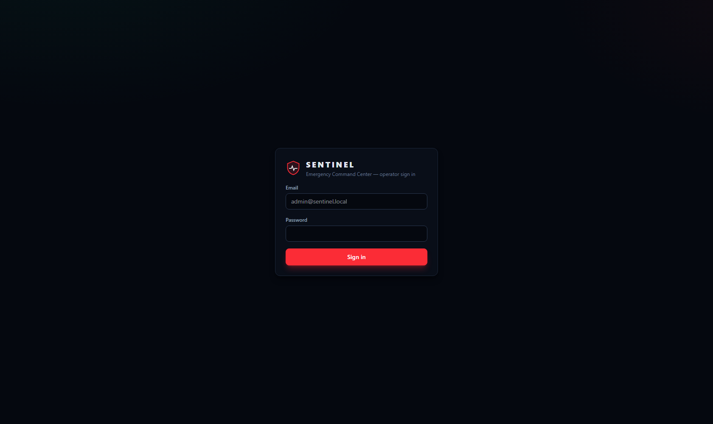
✅ Dashboard khul jaye aur upar dayen taraf Live (hara nukta) likha ho.
Ghalat password: laal message aayega. Login 8 ghante tak chalta hai, phir dobara login.
7. Dashboard Ka Tour (Har Hissa Kya Hai)
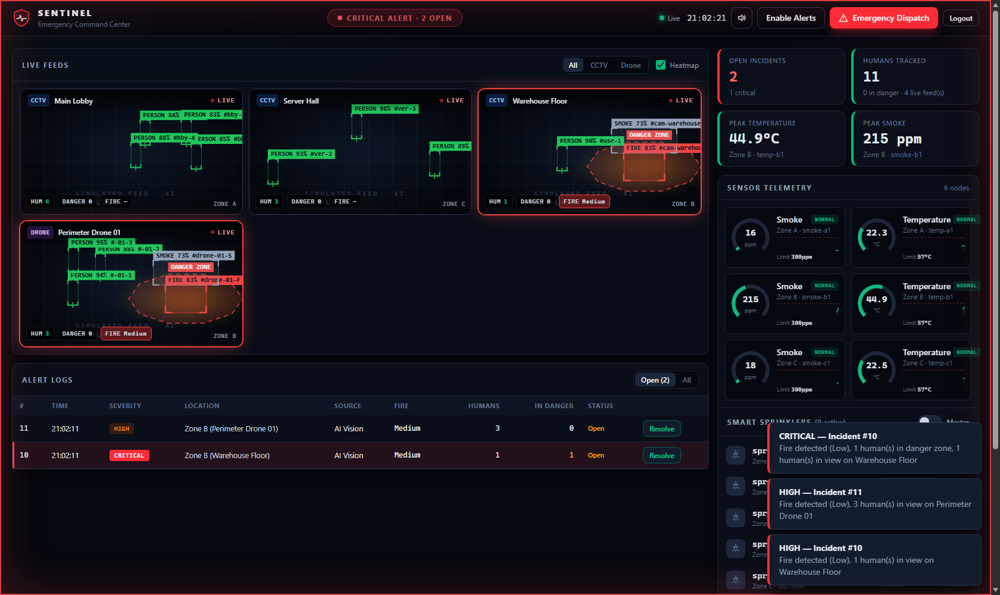
Upar ki patti (Top bar)
| Cheez | Matlab |
|---|---|
| Dashboard · Floor Plans · AI | Teen pages ke beech jana |
| Beech ka pill | Hara "ALL SYSTEMS NOMINAL" = sab theek. Laal "CRITICAL ALERT" = khatra |
| Live / Offline | Server se live connection hai ya nahi |
| Ghari | Abhi ka waqt |
| 🔊 button | Alarm ki awaaz band/chalu |
| Enable Alerts | Is browser par Push notifications on karna |
| Emergency Dispatch (laal) | Haath se emergency elaan (Chapter 12) |
| Logout | Bahar nikalna |
Dashboard ke hisse
| Hissa | Kya dikhata hai | Aap kya kar sakte hain |
|---|---|---|
| KPI patti (4 dabbe) | Khule incidents, insaan, sab se zyada garmi, sab se zyada dhuwan | Sirf dekhna |
| Live Feeds (cameras) | Har camera, AI ke boxes aur zones | All/CCTV/Drone filter, Heatmap on/off, camera par click = bara |
| Sensor Telemetry | 6 sensors ke gauges (dhuwan ppm, garmi °C) | Dekhna |
| Smart Sprinklers | Har sprinkler ON/OFF, Auto/Manual | Switch, Auto/Manual, Master |
| Alert Logs | Incidents ki list | Open/All filter, Resolve |
| Live Event Log | Har waqia (SMS gaya, sprinkler chala…) | Dekhna |
| Incident History & Logs | Aag ka graph aur history | Incident aur event type ka filter |
| Evacuation Route (estimate) | Naqsha aur mehfooz raasta | Naqshe par click = raasta |
Camera tile par rang
| Rang | Matlab |
|---|---|
| 🔴 Laal dabba (dhadakta) | Aag |
| ⚪ Gray dabba | Dhuwan |
| 🟢 Hara dabba | Mehfooz insaan |
| 🟠 Amber "IN DANGER" | Insaan khatre ke zone mein |
| 🔴 Laal dashed shakal | Danger zone |
| 🟢 Hari shakal | Safe zone (assembly point) |
| SIM DATA chip | Data nakli (test) hai |
| NO AI DATA | AI se 1.5 second se data nahi aaya |
Severity (khatre ka darja)
Low (halka) → Medium → High (zyada) → Critical (sab se khatarnak).
C · Har feature ka test
8. Test 1: Aag Ka Demo (Simulator)
Maqsad: dekhna ke aag lagne par poora system kaise react karta hai.
⚠️ Pehle Safe Test Mode (Chapter 4) karein. Is demo mein insaan danger zone mein aate hain, jo emergency hai, aur SMS/Email chalte hain.
Qadam:
- Window 1 (API) aur Window 2 (Website) chal rahi hon. Login karein.
.envse apniDevice__ApiKeycopy karein.- Nayi PowerShell window (Window 4):
cd C:\Users\m_fahad\Desktop\Project\backend
dotnet run --project Sentinel.Simulator -- --device-key <yahan Device__ApiKey> --ignite "Zone B"
- Browser mein Dashboard dekhein.
✅ Kya dikhna chahiye (1–2 minute mein):
- Cameras par boxes hilte hue. SIM DATA chip.
- Warehouse Floor (Zone B) camera par laal aag ka dabba aur laal danger zone, hari "assembly point".
- Upar pill laal: CRITICAL ALERT. Alarm ki awaaz.
- Alert Logs mein naya incident, Location "Zone B", Severity High/Critical.
- Live Event Log mein lines: incident khula, SMS "skipped", email (API window mein print).
- Zone B ke garmi/dhuwan gauges barhte hue.
- Simulated data ki wajah se sprinklers khud nahi chalte (camera aur simulator ke sensors dono): Live Event Log mein "sprinkler auto-activation skipped… SIMULATED", aur sensor incidents par [SIMULATED DATA].
Band karna: Window 4 mein Ctrl + C.
Camera lost check (simulator band karne ke baad):
- ~30 second baad Alert Logs mein har camera ke liye ek incident, Source Camera lost: "Camera lost: no frames from … for 31 s".
- Zone B ke cameras (jahan aag thi) High, baqi Medium.
- Simulator dobara chalayein: Live Event Log mein "Camera … is sending frames again". Phir purane "Camera lost" incidents Resolve kar dein.
Simulator ke options:
| Option | Kaam | Default |
|---|---|---|
--ignite "Zone A" |
Us zone mein foran aag (kai dafa likh sakte hain) | — |
--fps 2 |
Har camera ke frames per second | 5 |
--fire-probability 0 |
Khud se random aag band | 0.004 |
--telemetry-interval 5 |
Sensors kitne second baad | 2 |
9. Test 2: AI Ko Photo Dikhana (AI Page)
Maqsad: dekhna ke AI models asal mein aag, dhuwan aur insaan pehchaante hain.
Test photo kahan se: aag wali koi bhi photo (JPG/PNG, 5 MB tak). D-Fire dataset ki test photos Desktop\sentinel-colab\D-Fire.zip ke andar test\images\ mein hain (misaal AoF07831.jpg). Insaan wali koi bhi photo.
Qadam:
- Window 1, 2 aur 3 (AI service) chal rahi hon.
- Upar menu mein AI par click.
- Baen taraf dekhein: hara ONLINE · all models loaded, dono models (
person,fire_smoke) ke aage hara nukta. - Daen taraf Choose image… dabayein aur photo chunein.
- 1–3 second intezar.
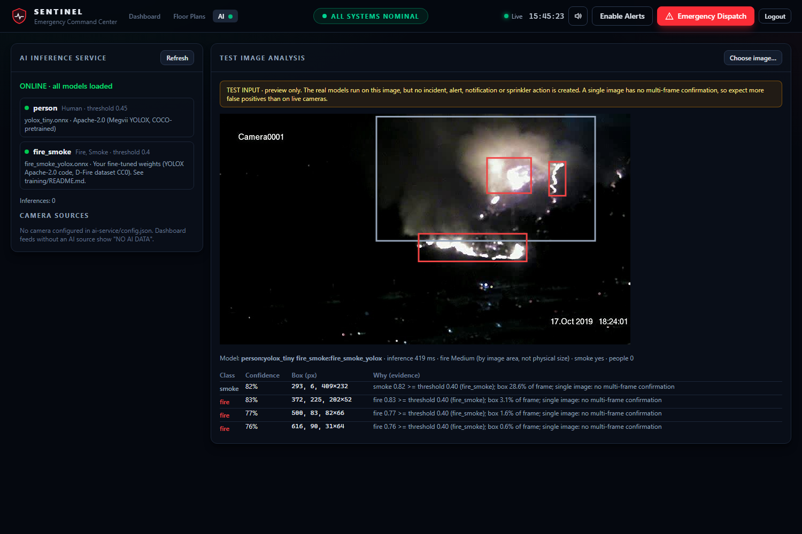
✅ Kya dikhna chahiye:
- Photo par dabbe: aag laal, dhuwan gray, insaan hara.
- Neeche line: model ke naam, kitne ms lage, "fire Medium", "smoke yes", "people 0".
- Table: Class, Confidence (jaise 83%), Box, aur Why (evidence) yaani AI ne kyun kaha.
- Bina aag wali photo par aag ka dabba na aaye.
Yaad rakhein:
- Ye sirf preview hai: koi incident, alert ya sprinkler nahi chalta.
- AI se kabhi galti ho sakti hai. Kuch na mile to iska matlab ye nahi ke jagah mehfooz hai.
Masla:
| Screen par | Matlab | Hal |
|---|---|---|
| Laal OFFLINE | AI service band hai | Window 3 chalayein |
| Peela "some models missing" | Koi model file nahi | ai-service\models\ check (Chapter 3, Qadam 4) |
| "sha256 mismatch" | Model file badli ya kharab | Sahi file dobara copy karein |
10. Test 3: Sensor Ko Garam Karna (Swagger)
Maqsad: dekhna ke garmi barhne par Warning, Alarm aur Critical sahi waqt par aate hain.
Swagger kya hai? API ka ek test page jahan se bina code ke request bhej sakte hain.
Qadam A: Swagger kholna aur login
- Browser: http://localhost:5291/swagger
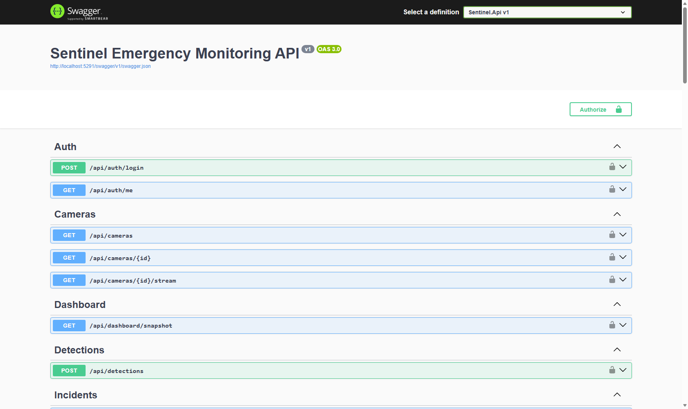
- Auth → POST /api/auth/login kholein → Try it out.
- Body mein:
{ "email": "admin@sentinel.local", "password": "aapka-password" }
- Execute. Jawab mein
"token": "eyJ..."aayega. Lambi token (quotes ke baghair) copy karein. - Upar dayen Authorize dabayein → Bearer wale dabbe mein token paste → Authorize → Close.
Qadam B: garmi bhejna
- IoT → POST /api/iot/sensors/{id}/readings → Try it out.
id=temp-b1(Zone B ka temperature sensor; threshold 57°C).- Body mein ek ek karke ye values bhejein, har dafa Execute, aur Dashboard dekhein:
| Value | Kya hona chahiye | Hisaab |
|---|---|---|
{ "value": 30 } |
✅ Normal, kuch nahi | 45.6 se kam |
{ "value": 50 } |
✅ Gauge peela (Warning), Live Event Log mein "Normal → Warning", incident nahi | ≥ 57 × 0.8 = 45.6 |
{ "value": 60 } |
✅ High incident + Zone B ke Auto sprinklers ON | ≥ 57 |
{ "value": 75 } |
✅ Critical incident + emergency notifications + sprinklers | ≥ 57 × 1.25 = 71.25 |
Sensor IDs:
| Zone | Dhuwan (threshold 300 ppm) | Garmi (threshold 57°C) |
|---|---|---|
| Zone A | smoke-a1 |
temp-a1 |
| Zone B | smoke-b1 |
temp-b1 |
| Zone C | smoke-c1 |
temp-c1 |
Dhuwan ke liye Critical = 300 × 1.5 = 450 ppm.
⚠️ Sensor ka data asli maana jata hai (SIMULATED nahi), is liye Alarm/Critical par Auto sprinklers chal jate hain. Is project mein sprinklers sirf database mein hain, koi asli hardware nahi. Test ke baad unhein OFF karein (Chapter 11).
11. Test 4: Sprinklers
Dashboard → Smart Sprinklers panel.
| Kaam | Kaise | ✅ Kya dikhe |
|---|---|---|
| Ek sprinkler ON/OFF | Us ka switch dabayein | Switch badle, Live Event Log mein line |
| Auto mode | "Auto" button | Alarm/emergency par system khud chala sakta hai |
| Manual mode | "Manual" button | System khud nahi chalayega, sirf aap |
| Master | Upar "Master" switch → confirm | Saare sprinklers ek saath ON/OFF |
Check: ek sprinkler Manual karein, phir Test 3 mein 75 bhejein. ✅ Manual wala sprinkler OFF rehna chahiye. Auto wale ON.
Yaad rakhein: sprinkler khud OFF nahi hota. Aag ke baad aap OFF karein.
12. Test 5: Emergency Dispatch Aur Resolve
Maqsad: haath se emergency elaan karna, phir incident band karna.
⚠️ Dispatch foran SMS/Email/Push bhejta hai. Pehle Safe Test Mode (Chapter 4).
Qadam:
- Upar laal Emergency Dispatch.
- Form:
- Zone: jaise
Zone B - Severity: Low / Medium / High / Critical
- Message: jaise "Test: Zone B khaali karein" (500 huroof tak)
- Activate all sprinklers in this zone: tick sirf agar sprinklers chalane hon
- Zone: jaise
- Dispatch Now dabayein.
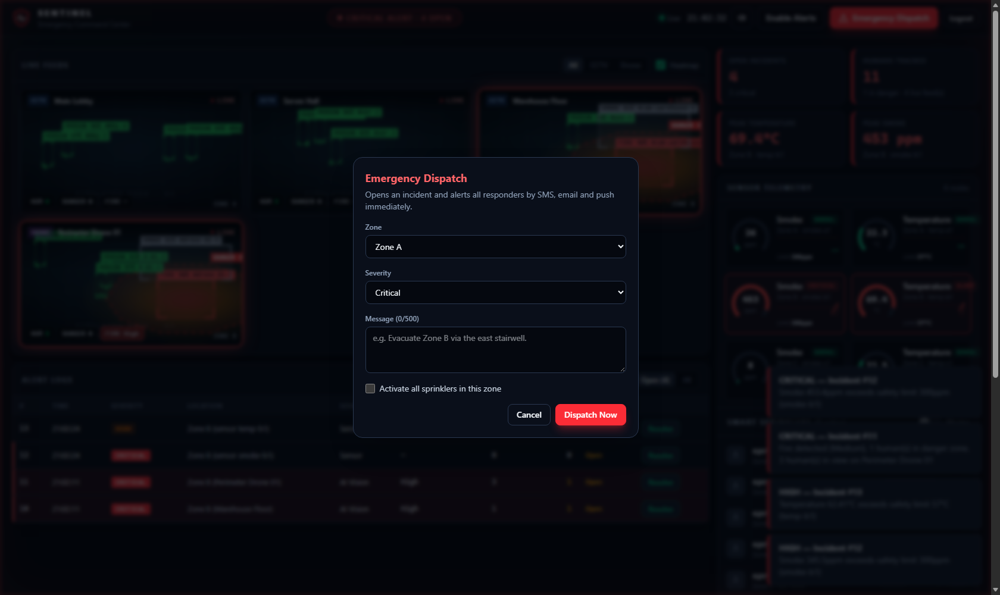
✅ Kya dikhna chahiye:
- Alert Logs mein naya incident (Source: Manual).
- Live Event Log: SMS skipped, email API window mein.
Resolve (band karna):
- Alert Logs mein us incident ki line par Resolve.
- ✅ Incident "Open" list se hat jaye ("All" mein Resolved dikhe). History mein
Resolvedlog.
13. Test 6: Naqsha Banana Aur Evacuation Raasta
A. Naqsha banana
- Upar Floor Plans → + New.
- Daen taraf Plan settings: Name ("Ground Floor"), Building ("Warehouse"), Floor (0), Width aur Height meters mein (jaise 30 × 20).
- (Ikhtiyari) Upload image (PNG/JPG): apne naqshe ki photo background mein (5 MB tak).
- Toolbar se drag karke banayein:
| Tool | Kya banana hai |
|---|---|
| + Room | Kamre / halls |
| + Corridor | Gallery |
| + Wall | Deewarein (kamron ke beech) |
| + Door | Deewar par darwaza (darwaze ke baghair raasta deewar paar nahi karta) |
| + Exit | Bahar nikalne ke darwaze (kam az kam ek) |
| + Safe zone | Assembly point |
| + Danger zone | Boiler room / khatarnak jagah |
- Select / Move se kisi cheez par click → daen panel mein naam, size badlein. Delete key = mitana.
- Danger zone chunein → Linked camera/sensor zone =
Zone B(Zone B mein incident khula ho to ye khud active). - Save. ✅ "Floor plan saved" message, title se "unsaved" hat jaye.
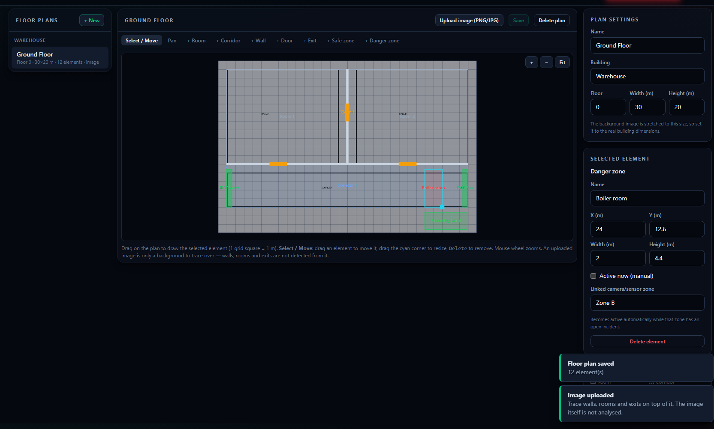
Zoom: mouse wheel ya + / − / Fit. Ek khana = 1 meter.
B. Raasta dekhna
- Dashboard → neeche Evacuation Route (estimate) panel → floor plan chunein.
- Naqshe par wahan click karein jahan insaan khara hai.
- ✅ Hari teer qareeb tareen exit tak, "Distance 14.8 m · ~12 s" jaisa likha.
C. Aag mein raasta badalna
- Zone B ke danger zone ke paas wala raasta dekh lein.
- Test 1 (simulator
--ignite "Zone B") ya Test 3 (temp-b1= 75) chalayein. - ✅ Danger zone laal/active, aur raasta khud badal kar doosre exit ki taraf, danger se kam az kam 1 m door.
- Koi raasta na bache to ✅ saaf message: "No safe route…"
| Pehle | Aag ke baad |
|---|---|
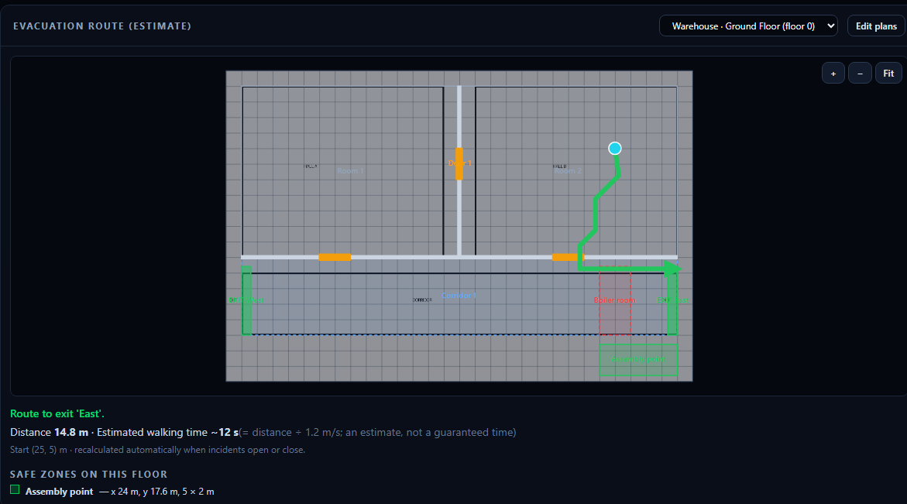 |
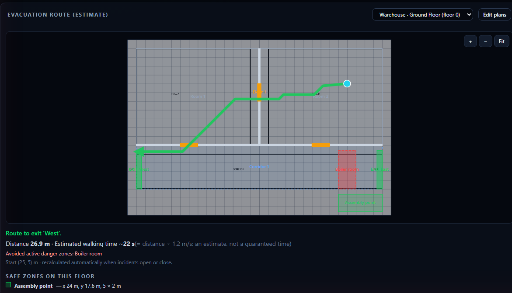 |
Yaad rakhein: waqt sirf andaza hai (faasla ÷ 1.2 m/s). Dhuwan, bheer, seedhiyan shamil nahi.
D. Camera ko naqshe se jorna (camera ka insaan khud naqshe par)
Maqsad: camera mein dikha insaan naqshe par khud amber nuqta ban kar aaye, aur us par click se raasta nikle.
Ek dafa ki tayyari: camera ki ek snapshot (photo) jis mein farsh ke 4 kone saaf dikhein, misaal kamre ke 4 kone.
- Floor Plans → naqsha kholein → pehle Save (title par "unsaved" na ho).
- Daen taraf Camera calibration → camera chunein (misaal
Warehouse Floor (cam-warehouse)). - Snapshot ko Paint mein kholein. Pehle kone par mouse rakhein: Paint neeche x, y pixel dikhata hai. Ye Camera px mein likhein.
- Usi kone ke liye Plan m ⌖ dabayein aur naqshe par wohi kona click karein (ya meters khud likhein).
- Baqi 3 kono ke liye yehi. Koi 3 kone ek seedhi line mein na hon.
- Save calibration. ✅ "Camera calibrated" message, aur list mein camera ke aage "calibrated here".
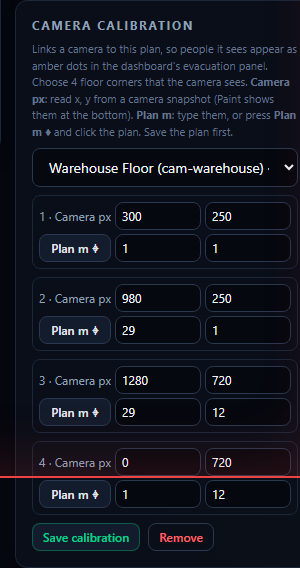
Check:
- Simulator chalayein (Test 1) ya AI camera (Test 8).
- Dashboard → Evacuation Route → wohi naqsha.
- ✅ Naqshe par amber nuqte: camera ke insaan, unke pairon ki jagah par.
- Kisi nuqte par click → ✅ hari teer usi jagah se exit tak.
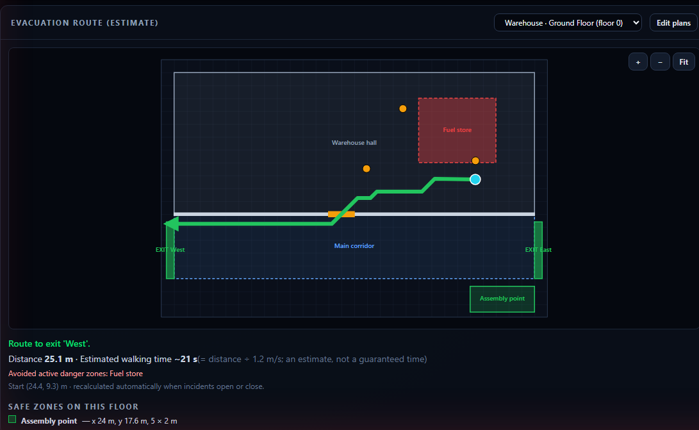
Masle:
| Screen par | Matlab | Hal |
|---|---|---|
| "Three of the 4 points lie on one line" | 3 kone ek line mein | Alag alag kone chunein |
| "A point lies outside…" | Naqshe se bahar ka point | Naqshe ke andar ke meters |
| "Save the plan first" | Naqsha save nahi | Pehle Save |
| Nuqte nahi aate | Camera se frames nahi, ya ghalat naqsha chuna | Simulator/AI chalayein, wohi naqsha chunein |
| Nuqte ghalat jagah | Points ki tarteeb ulti (camera ka kona 1 ≠ naqshe ka kona 1) | Dono taraf ek hi kona ek hi number par |
⚠️ Camera hila to dobara calibrate karein. Nuqta andaza hai, aur seedhiyon par khade insaan ke liye ghalat ho sakta hai.
14. Test 7: Incident History Aur Logs
- Dashboard → Incident History & Logs.
- Upar se ek incident chunein (ya "All incidents"), aur event type ("All event types").
- ✅ Dikhe:
- Camera wale incident par aag ka graph (frame ka %), sensor wale par sensor ka graph.
- Logs:
Opened,Escalated,FireMeasurement,PersonInDanger,EvacuationRoute,Resolved. - Test data par jamni SIMULATED, raaste par neela ESTIMATE.
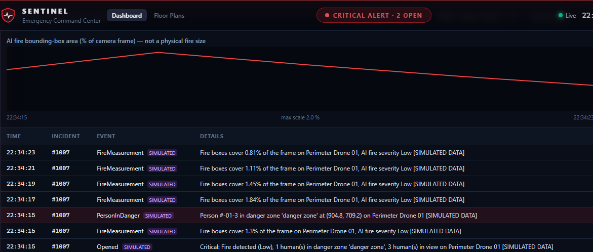
15. Test 8: AI Ko Video Se Camera Ki Tarah Chalana
Maqsad: AI ko lagatar frames dena, jaise asli camera, aur dekhna ke wo khud incident banata hai.
Qadam:
- Aag ki ek video file (MP4/AVI) computer par rakhein.
ai-service\config.example.jsonki copy banayein, naamconfig.json.- Notepad mein
camerashissa aisa karein (apna path likhein,\ki jagah/):
{
"api": "http://localhost:5291",
"listen": "127.0.0.1:8008",
"cameras": [
{ "cameraId": "cam-warehouse", "source": "C:/Users/m_fahad/Videos/fire-test.mp4", "fps": 2, "loop": false, "enabled": true }
]
}
- Window 3 band karein (Ctrl + C), phir device key de kar dobara chalayein:
cd C:\Users\m_fahad\Desktop\Project\ai-service
$env:SENTINEL_DEVICE_KEY = "<yahan Device__ApiKey>"
.\.venv\Scripts\python -m sentinel_ai
✅ Kya dikhna chahiye:
- AI page → Camera sources:
cam-warehouse · file · SIMULATED / TEST INPUT · running · sent … - Dashboard ke Warehouse camera par AI ke boxes.
- Aag 3 frames tak lagatar dikhe to incident, SIMULATED DATA label ke saath.
- Sprinklers khud nahi chalte (simulated).
Yaad rakhein:
- Video file hamesha SIMULATED maani jati hai.
- Agar video mein manzar har frame badalta ho (photos ka slideshow), to aag "confirm" nahi hogi.
fpsbarha kar (jaise 4) dobara try karein. - Is purane computer par kul ~1–2 frame per second ka budget hai.
- Asli camera (
rtsp://…) jorne se pehle Safe Test Mode aur ijazat zaroori. Camera ka password config mein nahi, environment variable mein rakhein.
16. Test 9: Browser Notifications
- Upar Enable Alerts dabayein → browser poochhe to Allow.
- Test 1 ya Test 5 chalayein.
- ✅ Windows ke kone mein Sentinel ka notification aaye (dashboard ka tab band ho tab bhi, jab tak browser background mein chal raha ho).
Ye sirf tab kaam karta hai jab .env mein Notifications__WebPush__… keys bhari hon. Keys banane ki command:
cd C:\Users\m_fahad\Desktop\Project\backend
dotnet run --project Sentinel.Api -- generate-vapid-keys
D · Masle, hifazat aur checklist
17. Automatic Tests (Ek Click Mein Sab Check)
Ye tests code khud check karte hain. Har command ke aakhir mein failed: 0 hona chahiye.
cd C:\Users\m_fahad\Desktop\Project\backend
dotnet test # ✅ Passed: 58
cd C:\Users\m_fahad\Desktop\Project\frontend
ng test --watch=false # ✅ Tests 25 passed
ng build # ✅ "Application bundle generation complete"
cd C:\Users\m_fahad\Desktop\Project\ai-service
.\.venv\Scripts\python -m unittest discover -s tests # ✅ Ran 15 tests ... OK
AI ki accuracy dobara napna (D-Fire test folder ka path chahiye, ~20 minute):
.\.venv\Scripts\python tools\evaluate.py --data <D-Fire\test folder> --classes 0=Smoke,1=Fire --sweep 0.25,0.3,0.35,0.4,0.5 --out reports\meri-jaanch
✅ Threshold 0.4 par fire image recall ~0.93 aur smoke ~0.92 aana chahiye.
18. Masle Aur Un Ka Hal
| Masla | Wajah | Hal |
|---|---|---|
| Top bar par Offline / Reconnecting | API band hai | Window 1 chalayein |
| Login par "network error" | API band, ya port 5291 mein masla | Window 1 check, http://localhost:5291/health kholein: "status":"ok" aana chahiye |
| Ghalat password | .env ka password |
.env mein Seed__AdminPassword dekhein. Users table pehle se ho to wohi purana password |
| API: "Cannot connect to SQL Server" | SQL Server band | Start → "Services" → SQL Server (MSSQLSERVER) → Start |
| API: "pending migration(s)" | Database purana | dotnet ef database update --project Sentinel.Api (Chapter 3) |
| API error: "Invalid column name 'Calibration'" | Naya update (camera calibration) lag gaya, database purana | Wohi command: dotnet ef database update --project Sentinel.Api |
| Cameras par NO AI DATA | AI/simulator data nahi bhej raha | Simulator (Test 1) ya AI camera (Test 8) chalayein |
| AI page OFFLINE | AI service band | Window 3 chalayein |
| AI "some models missing" | .onnx file nahi |
Chapter 3, Qadam 4 |
| AI camera "API HTTP 401" | Device key ghalat ya nahi di | $env:SENTINEL_DEVICE_KEY = .env ka Device__ApiKey |
| Simulator "401" | Device key ghalat | --device-key mein sahi key |
ng / dotnet "not recognized" |
Software install nahi ya PowerShell purani | Chapter 2, phir nayi PowerShell kholein |
| Port "already in use" | Pehle se chal raha hai | Purani window band karein, ya computer restart |
| SMS/Email nahi aate | Safe Test Mode on, ya settings ghalat | # hatayein (Chapter 4), Live Event Log mein error dekhein |
| Floor plan save par laal message | Koi cheez naqshe se bahar | Message mein naam likha hota hai, us ko andar karein |
| Raasta: "Start point is not inside…" | Click kamre/corridor se bahar | Room/Corridor ke andar click karein |
19. Kya Kabhi Na Karein
| ❌ Na karein | Kyun |
|---|---|
| Ise asli fire alarm ki jagah lagana | Ye test aur lab mein check hua hai, certified nahi |
| Bina Safe Test Mode ke aag ka test | Asli logon ko asli SMS/Email chale jayenge |
| Asli sprinkler/alarm hardware bina ijazat jorna | Paani ya ghabrahat se nuqsan |
.env kisi ko bhejna ya internet par daalna |
Is mein passwords aur keys hain |
| AI ke "kuch nahi mila" ko "sab mehfooz" samajhna | AI se galti ho sakti hai |
Camera ka password config.json mein likhna |
Environment variable mein rakhein |
Model files (.onnx) badalna |
Fingerprint match nahi hoga, model band ho jayega |
Yaad rakhein: aag mein bijli jaye to camera band ho sakte hain. Cameras ko UPS/PoE backup par rakhein, aur hamesha smoke detectors aur fire panel istemaal karein.
20. Test Checklist (Print Karke Tick Karein)
| # | Test | Chapter | ✅ / ❌ | Note |
|---|---|---|---|---|
| 1 | Software install, versions dikhe | 2 | ||
| 2 | .env, database, packages, AI setup |
3 | ||
| 3 | Safe Test Mode on | 4 | ||
| 4 | Teeno windows chalin (5291, 4200, 8008) | 5 | ||
| 5 | Login hua, "Live" hara | 6 | ||
| 6 | Simulator: Zone B mein aag, CRITICAL, incident, sprinklers khud nahi chale | 8 | ||
| 6b | Simulator band: 30 sec baad "Camera lost" (Zone B High) | 8 | ||
| 7 | AI page: aag ki photo par laal dabba | 9 | ||
| 8 | AI page: bina aag photo par aag nahi | 9 | ||
| 9 | Sensor 50 = Warning, 60 = High, 75 = Critical | 10 | ||
| 10 | Sprinkler: Manual wala khud nahi chala | 11 | ||
| 11 | Emergency Dispatch + Resolve | 12 | ||
| 12 | Naqsha bana aur save hua | 13 | ||
| 13 | Raasta + waqt dikha | 13 | ||
| 14 | Aag mein raasta khud badla | 13 | ||
| 14b | Camera calibrate hua, naqshe par amber nuqte, nuqte se raasta | 13 | ||
| 15 | History mein graph aur logs | 14 | ||
| 16 | AI video camera: SIMULATED incident | 15 | ||
| 17 | Browser notification aaya | 16 | ||
| 18 | Automatic tests: 58 + 25 + 15 pass | 17 | ||
| 19 | Safe Test Mode band kiya (# hataye) |
4 |
Tester ka naam: .................................... Tareekh: ....................
Kuch nahi mila. Doosra lafz try karein.